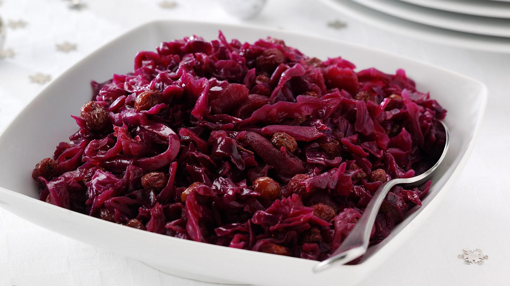

Red Cabbage with Apples

Ingredients
- 1 red cabbage, finely shredded
- 2 bay leaves
- 5 star anise
- ½ tsp ground cinnamon
Step 1
Place all the ingredients except for the apples in a large saucepan and season.
Place over a medium heat, bring to the boil, then turn down the heat and simmer for 30 mins.
Add the apples, then continue cooking for 15 mins until tender.